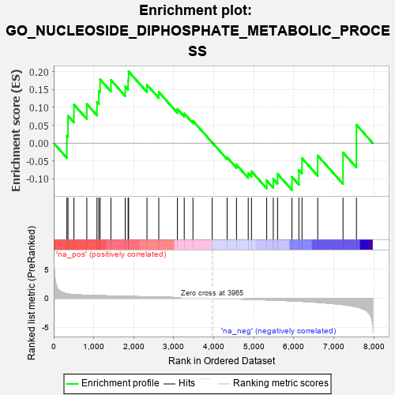
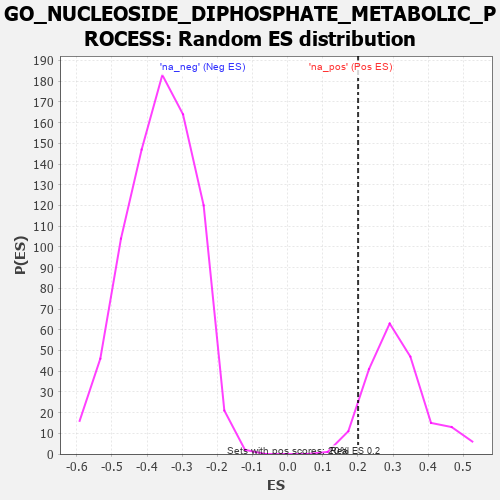

| | | Dataset | 7d |
| Phenotype | NoPhenotypeAvailable |
| Upregulated in class | na_pos |
| GeneSet | GO_NUCLEOSIDE_DIPHOSPHATE_METABOLIC_PROCESS |
| Enrichment Score (ES) | 0.20030034 |
| Normalized Enrichment Score (NES) | 0.64567876 |
| Nominal p-value | 0.9390863 |
| FDR q-value | 0.96846473 |
| FWER p-Value | 1.0 |
Table: GSEA Results Summary

Fig 1: Enrichment plot: GO_NUCLEOSIDE_DIPHOSPHATE_METABOLIC_PROCESS
Profile of the Running ES Score & Positions of GeneSet Members on the Rank Ordered List
| PROBE | GENE SYMBOL | GENE_TITLE | RANK IN GENE LIST | RANK METRIC SCORE | RUNNING ES | CORE ENRICHMENT | | 1 | NUP85 | | | 329 | 0.772 | 0.0203 | Yes |
| 2 | ARNT | | | 357 | 0.741 | 0.0762 | Yes |
| 3 | NUP54 | | | 505 | 0.627 | 0.1078 | Yes |
| 4 | RAE1 | | | 827 | 0.524 | 0.1093 | Yes |
| 5 | FOXK2 | | | 1081 | 0.467 | 0.1148 | Yes |
| 6 | NUP93 | | | 1127 | 0.459 | 0.1458 | Yes |
| 7 | NUP43 | | | 1160 | 0.453 | 0.1779 | Yes |
| 8 | NUP88 | | | 1429 | 0.404 | 0.1765 | Yes |
| 9 | NUP58 | | | 1787 | 0.340 | 0.1587 | Yes |
| 10 | FOXK1 | | | 1859 | 0.326 | 0.1758 | Yes |
| 11 | NUP62 | | | 1871 | 0.324 | 0.2003 | Yes |
| 12 | SEC13 | | | 2330 | 0.256 | 0.1631 | No |
| 13 | NUP50 | | | 2625 | 0.209 | 0.1428 | No |
| 14 | TIGAR | | | 3091 | 0.138 | 0.0953 | No |
| 15 | NUP98 | | | 3261 | 0.112 | 0.0829 | No |
| 16 | LDHA | | | 3479 | 0.080 | 0.0620 | No |
| 17 | NCOR1 | | | 3961 | 0.000 | 0.0015 | No |
| 18 | NUDT9 | | | 4333 | -0.066 | -0.0400 | No |
| 19 | ADPGK | | | 4567 | -0.109 | -0.0606 | No |
| 20 | DLG1 | | | 4860 | -0.169 | -0.0838 | No |
| 21 | EP300 | | | 4941 | -0.186 | -0.0790 | No |
| 22 | OGDHL | | | 5322 | -0.277 | -0.1047 | No |
| 23 | ACTN3 | | | 5486 | -0.315 | -0.1000 | No |
| 24 | PGM1 | | | 5593 | -0.342 | -0.0860 | No |
| 25 | GALK1 | | | 5953 | -0.455 | -0.0948 | No |
| 26 | DLG2 | | | 6126 | -0.513 | -0.0755 | No |
| 27 | INSR | | | 6204 | -0.538 | -0.0421 | No |
| 28 | TPR | | | 6597 | -0.709 | -0.0348 | No |
| 29 | LRGUK | | | 7229 | -1.101 | -0.0263 | No |
| 30 | ENO4 | | | 7564 | -1.495 | 0.0512 | No |
Table: GSEA details [plain text format]

Fig 2: GO_NUCLEOSIDE_DIPHOSPHATE_METABOLIC_PROCESS: Random ES distribution
Gene set null distribution of ES for GO_NUCLEOSIDE_DIPHOSPHATE_METABOLIC_PROCESS